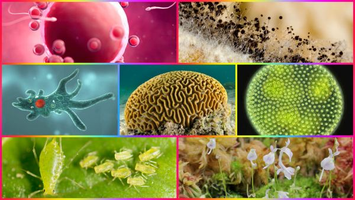

Introducción
La función de reproducción consiste en la formación de nuevos organismos semejantes a sus progenitores. Los descendientes compensan las células producidas por la muerte de individuos de la especie; por tanto, aunque la reproducción no es indispensable para la vida de un organismo, lo es para asegurar la supervivencia de su especie a través del tiempo. Los seres vivos han desarrollado diversos métodos de reproducción.
